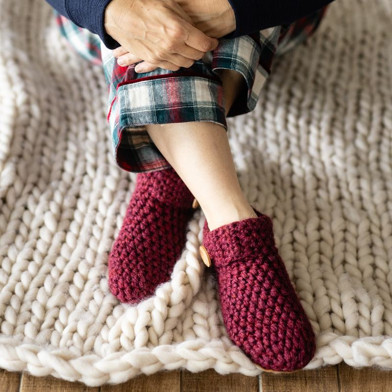

01 — Footwear
Kingdom of Wow
Discover Kingdom of WowCosy handmade wool slippers and easy summer espadrilles — timeless, fun, and made with love.
- Brand

- Made by
- Local women artisans, Siem Reap
- Materials
- Wool, leather and other natural materials
- Certified
- B Corp


